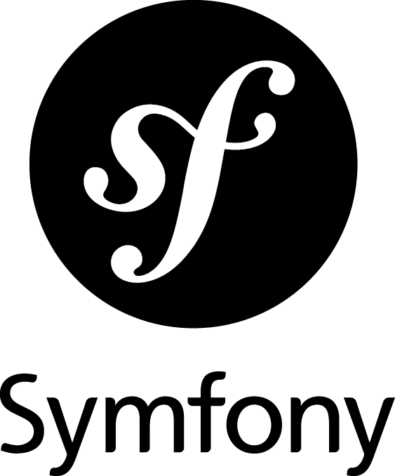
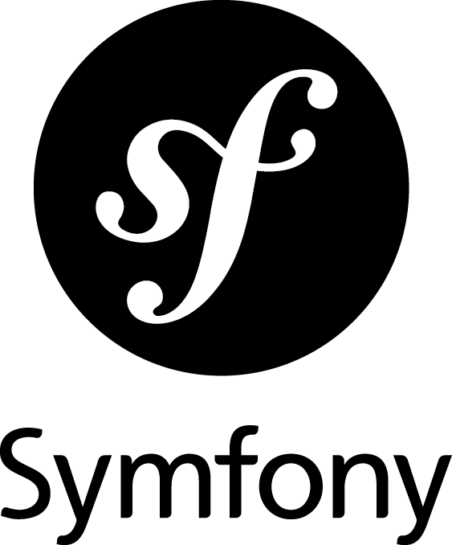
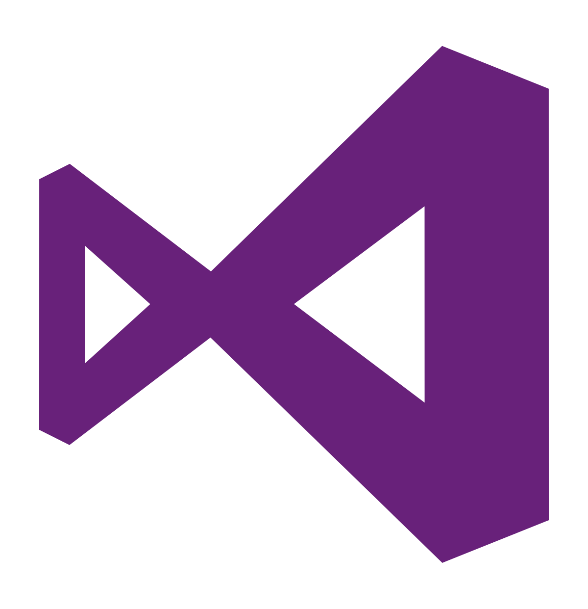
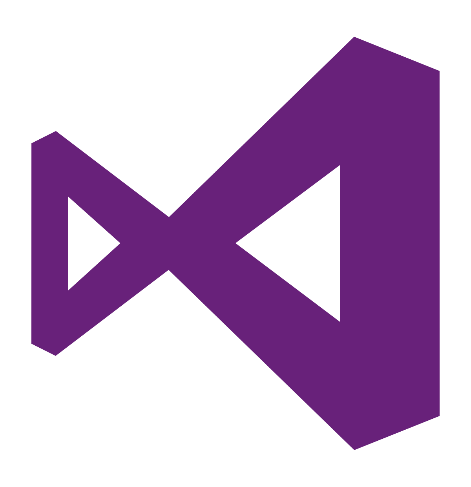
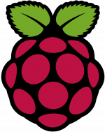
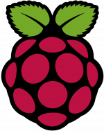

A propos
Je m'appelle Théo, je suis titulaire d'un BTS SN IR. Je suis passionné par l'informatique, les mangas, les comics ainsi que le catch.
Ce site recensera mon parcours, mes compétences ainsi que mes projets.
Mes compétences
Languages et CMS


Frameworks

 


 

OS et Technologies


 


Mes Formations
-
Lycée Polyvalent Christophe Colomb
Sucy-en-Brie, France
2017-2019
Découverte de l'UML, apprentissage des languages HTML, CSS, JavaScript, études de réseaux, réalisation d'applications en C++ avec QT. Réalisation d'un projet de groupe.
-
Lycée Polyvalent Christophe Colomb
Sucy-en-Brie, France
2015-2017
Découverte de l'algorithmique et de la programmation sur carte Arduino. Réalisation d'un projet de groupe.